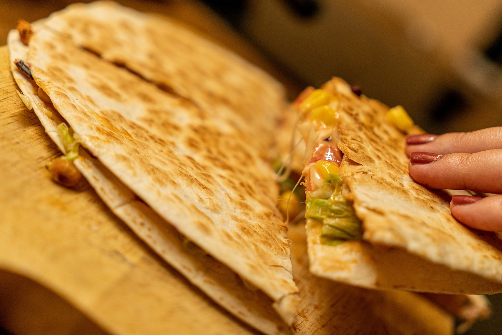

Home

Here we see a complete dish of a quesadilla
A quesadilla is a dish comprised of tortillas and cheese.
This dish is a Mexican clasic quickly prepared of two grittled torillas with a hot and cheesy center.
Ingredients:
- Tortilla
- Cheese, queso preferred
- butter or oil
- Optional meats
Instructions:
- Heat up grill top or pan
- Heat up butter or oil in the pan
- Give the tortillas time to bloom on the top, you should see the tortilla blister
- Once the tortilla is starting to darken add cheese
- Optionally add topings like meat or veggies
- Remove from the heat and cut into triangles to serve
Quesadillas are a staple of Frontera food